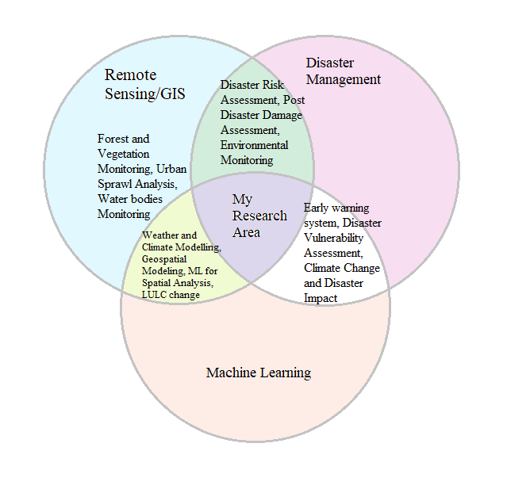

Junior Researcher — Geospatial & Environmental Sciences
Academy of Biology & Biotechnology, Southern Federal University, Rostov-on-Don, Russia
I am a junior researcher in geospatial and environmental sciences, currently pursuing a Ph.D. at Southern Federal University, Rostov-on-Don, Russia. My work centers on climate change, disaster vulnerability and risk assessment, and the application of geospatial modeling and machine learning to environmental and agricultural challenges.
My work spans designing and optimizing geospatial models for environmental and hazard assessments, interpreting spatial datasets with advanced geospatial and statistical techniques, and applying GIS software, remote sensing tools, and machine learning frameworks to spatial analysis problems. I also regularly draft, write, and review research publications in the geospatial sciences.
Before joining the Academy of Biology and Biotechnology at Southern Federal University as a Junior Researcher, I worked as a Geographer with the Directorate of Census Operations, Punjab, India, and completed an internship at the Indian Meteorological Centre, Chandigarh. I hold a Master's in Remote Sensing and GIS from Panjab University, Chandigarh, and a Bachelor's (Honours) in Geography from the University of Delhi.
Southern Federal University (pursuing)
Panjab University, Chandigarh
Shaheed Bhagat Singh College, University of Delhi
Academy of Biology & Biotechnology, Southern Federal University, Russia
Directorate of Census Operations, Punjab
Indian Meteorological Centre, Chandigarh
Core areas of scientific and technical work across geospatial and environmental research:
GIS-based spatial data analysis and geostatistical modeling, land use/land cover classification and change detection, and environmental monitoring and disaster assessment.
See related workLandslide hazard and susceptibility mapping, climate change impact analysis, groundwater potential assessment, and hydro-meteorological hazard and vulnerability mapping.
See related workThematic map creation, spatial database management, and satellite image processing and classification for environmental and agricultural applications.
See related workMachine learning applications in geospatial research, from ensemble models for groundwater potential mapping to predictive frameworks for soil and crop parameters.
See related work
Representative geospatial & machine learning research workflow
Global exposure: Russia (Southern Federal University)
11 peer-reviewed research articles and 1 book chapter. View full list on Google Scholar →
Earth Systems and Environment, 2026
Environmental Nanotechnology, Monitoring & Management, p.101142, 2026
Discover Geoscience, 2025
Discover Cities, 2025
Phyton, 94(5), p.1339, 2025
Science of the Total Environment, 2025
Chemosphere, 391, p.144731, 2025
Sains Tanah, 22(2), p.525, 2025
Chapter in Nanotechnology Applications and Innovations for Improved Soil Health, pp.143–171
Annals of the National Association of Geographers, India, 44(2), 2024
Journal of Remote Sensing & GIS, 2022
The Asian Review of Civil Engineering, Vol.10 No.2, pp.18–25, 2021
Professional development in remote sensing, GIS, and disaster management
ESRI Web Course
ESRI Web Course
ESRI Web Course
Swastik Edustart GIS Training Institute — Webinar
IIRS-Dehradun Distance Learning Programme
IIRS-ISRO Outreach Program
IIRS-ISRO Outreach Program
IIRS-ISRO Outreach Program
National Institute of Disaster Management — Webinar
Map Division, ORGI
III All-Russian Scientific & Practical Conference with International Participation, "Current Issues of Natural Science in Modern Scientific Knowledge", Kalmyk State University, Elista, Russia — 16–18 Apr 2026
"Catchment-River-Estuary: Studies of Soil Erosion, Channel and Estuary Processes", SFedU & SSC RAS, Rostov-on-Don, Russia — 15–18 Sep 2025
"Monitoring, Protection and Restoration of Soil Ecosystems under Anthropogenic Pressure", Soil Health Laboratory, D.I. Ivanovsky Academy of Biology and Biotechnology, Southern Federal University, Rostov-on-Don, Russia — 7–9 Jul 2024
National Conference on "Landslide Risk Assessment and Mitigation in India", Department of Geography, Jamia Millia Islamia University, New Delhi, India — 1–2 Nov 2022
National Seminar & 1st Annual Meet of GSHP, "Geography, Development and Public Policy", Department of Geography, Himachal Pradesh University, India — 23–24 Sep 2022
International Conference on "Livable Cities: Transforming Sustainability and its Challenges", Department of Geography, Shaheed Bhagat Singh College, University of Delhi, India — 5–7 Feb 2018
Technical, software, and language proficiencies
Zorge 21g
Southern Federal University
Rostov-on-Don, Russia
(+7) 909 409 2346
(+91) 9555 716 011
ORCID: 0009-0003-3684-1696
Scopus ID: 57211988669
Southern Federal University, Rostov-on-Don
Open in Google Maps